Spatial statistics#
TODO: Update the links
# /// script
# requires-python = ">=3.10"
# dependencies = [
# "matplotlib",
# "numpy",
# "scikit-image",
# "scipy",
# "tifffile",
# "imagecodecs",
# "pandas",
# "seaborn",
# ]
# ///
Overview#
In this notebook, we will learn how to assess spatial relationships between objects. Particularly we will focus on clustering and co-localisation.
Our data consists of fluorescence images with five channels:
Ch0: Hoechst staining, nuclei
Ch1: Phalloidin staining, F-actin, whole cell
Ch2: Protein A, spot pattern
Ch3: Protein B, spot pattern
Ch4: Protein C, spot pattern
Our questions are:
Are any of proteins A-C clustering?
Are they co-localizing?
Do they localise to the cell membrane?
To answer these questions, we will introduce the complete sptaial randomness Monte Carlo method to generate random controls, the KD-tree for efficient neighbor seearch, the nearest neighbor metricm Clark-Evans index and Ripleys K to quantify spatial proximity.
Importing libraries#
from pathlib import Path
import tqdm
import matplotlib.pyplot as plt
import matplotlib.colors as mcolors
from matplotlib.cm import ScalarMappable
import seaborn as sns
import numpy as np
from scipy.spatial import KDTree
import pandas as pd
import skimage
import tifffile
---------------------------------------------------------------------------
ModuleNotFoundError Traceback (most recent call last)
Cell In[2], line 7
3
4 import matplotlib.pyplot as plt
5 import matplotlib.colors as mcolors
6 from matplotlib.cm import ScalarMappable
----> 7 import seaborn as sns
8
9 import numpy as np
10 from scipy.spatial import KDTree
ModuleNotFoundError: No module named 'seaborn'
def overlay(image=None, label_mask=None, df=None, id_col=None, measurement_col=None,
alpha=0.3, cmap=None, figsize=(8, 8), vmin=None, vmax=None,
coordinates=None, focus_object=None):
"""
Overlay a segmentation mask on an image, color-coded by a measurement.
Parameters
----------
image : 2D array, list of 2D arrays, or (c, y, x) array, or None
Single image, list of images, or 3D array composited as colored channels:
1 image: grey | 2: red + cyan | 3: magenta + cyan + yellow.
label_mask : 2D array, list of 2D arrays, or (c, y, x) array, or None
Single mask (integer IDs, background=0), list of masks, or 3D array —
each mask shown in a distinct color. If None, only the image is shown.
df : pd.DataFrame, optional
Table with cell IDs and measurements. If None and label_mask is a single
array, cells are shown with random colors and labeled by ID.
id_col : str, optional
Column in df with cell IDs matching label_mask values.
measurement_col : str or None
Column to color cells by (categorical or continuous).
alpha : float
Overlay opacity (0 = transparent, 1 = opaque).
cmap : str or None
Colormap. Defaults: categorical='tab10', continuous='viridis'.
figsize : tuple
Figure size in inches. Adjusted automatically when focus_object is set.
vmin, vmax : float or None
Continuous colormap range. Defaults to data min/max.
coordinates : (N, 2) array, or pd.DataFrame with columns 'x', 'y' [, 'channel']
Points to scatter on top of the image. Array: (row, col) order.
DataFrame: 'x'/'y' columns; if 'channel' column present, one color per channel.
focus_object : int or None
Object ID to zoom into. Crops all data to the object's bounding box
(with 15% padding) and resizes the figure to match.
Returns
-------
fig, ax : matplotlib Figure and Axes
"""
# normalize 3D (c, y, x) arrays to list of 2D arrays
if isinstance(image, np.ndarray) and image.ndim == 3:
image = [image[i] for i in range(image.shape[0])]
if isinstance(label_mask, np.ndarray) and label_mask.ndim == 3:
label_mask = [label_mask[i] for i in range(label_mask.shape[0])]
def _normalize(img):
img = img.astype(float)
img = (img - img.min()) / (img.max() - img.min() + 1e-8)
if img.ndim == 2:
img = np.stack([img] * 3, axis=-1)
return img
def _plot_coordinates(ax, coords):
if coords is None:
return
if isinstance(coords, list):
colors = plt.get_cmap('tab10').colors
for i, arr in enumerate(coords):
arr = np.asarray(arr)
ax.scatter(arr[:, 1], arr[:, 0], s=10,
c=[colors[i % len(colors)]],
linewidths=0.5, edgecolors='black', label=str(i))
ax.legend(bbox_to_anchor=(1.01, 0), loc='lower left', title='channel')
elif isinstance(coords, pd.DataFrame):
if 'channel' in coords.columns:
channels = coords['channel'].unique()
colors = plt.get_cmap('tab10').colors
for i, ch in enumerate(channels):
subset = coords[coords['channel'] == ch]
ax.scatter(subset['x'], subset['y'], s=10,
c=[colors[i % len(colors)]],
linewidths=0.5, edgecolors='black', label=str(ch))
ax.legend(bbox_to_anchor=(1.01, 0), loc='lower left', title='channel')
else:
ax.scatter(coords['x'], coords['y'], s=10,
c='yellow', linewidths=0.5, edgecolors='black')
else:
coords = np.asarray(coords)
ax.scatter(coords[:, 1], coords[:, 0], s=10,
c='yellow', linewidths=0.5, edgecolors='black')
# compute crop region from focus_object
crop = None
if focus_object is not None:
masks_for_crop = label_mask if isinstance(label_mask, list) else ([label_mask] if label_mask is not None else [])
for m in masks_for_crop:
region = np.argwhere(m == focus_object)
if len(region) > 0:
y_min, x_min = region.min(axis=0)
y_max, x_max = region.max(axis=0)
pad = int(max(y_max - y_min, x_max - x_min) * 0.15)
mask_h, mask_w = m.shape
crop = (max(0, y_min - pad), min(mask_h, y_max + pad),
max(0, x_min - pad), min(mask_w, x_max + pad))
break
def _apply_crop(arr):
if arr is None or crop is None:
return arr
y0, y1, x0, x1 = crop
return arr[y0:y1, x0:x1]
def _offset_coordinates(coords):
if coords is None or crop is None:
return coords
y0, y1, x0, x1 = crop
if isinstance(coords, list):
result = []
for arr in coords:
arr = np.asarray(arr, dtype=float).copy()
in_crop = (arr[:, 0] >= y0) & (arr[:, 0] < y1) & \
(arr[:, 1] >= x0) & (arr[:, 1] < x1)
arr = arr[in_crop]
arr[:, 0] -= y0
arr[:, 1] -= x0
result.append(arr)
return result
elif isinstance(coords, pd.DataFrame):
coords = coords.copy()
in_crop = (coords['x'] >= x0) & (coords['x'] < x1) & \
(coords['y'] >= y0) & (coords['y'] < y1)
coords = coords[in_crop]
coords['x'] = coords['x'] - x0
coords['y'] = coords['y'] - y0
else:
coords = np.asarray(coords, dtype=float).copy()
in_crop = (coords[:, 0] >= y0) & (coords[:, 0] < y1) & \
(coords[:, 1] >= x0) & (coords[:, 1] < x1)
coords = coords[in_crop]
coords[:, 0] -= y0
coords[:, 1] -= x0
return coords
# adjust figsize to match crop aspect ratio
_figsize = figsize
if crop is not None:
y0, y1, x0, x1 = crop
w_px, h_px = x1 - x0, y1 - y0
scale = max(figsize)
_figsize = (scale * w_px / max(w_px, h_px), scale * h_px / max(w_px, h_px))
# --- multiple images: composite colored channels ---
if isinstance(image, list):
n = len(image)
if n > 3:
raise ValueError(f"At most 3 images can be composited. Got {n}.")
channel_colors = {
1: [(1, 1, 1)],
2: [(1, 0, 0), (0, 1, 1)],
3: [(1, 0, 1), (0, 1, 1), (1, 1, 0)],
}[n]
imgs = [_normalize(img)[:, :, 0] for img in image]
h, w = imgs[0].shape
composite = np.zeros((h, w, 3))
for img, color in zip(imgs, channel_colors):
for c in range(3):
composite[:, :, c] += img * color[c]
img_display = np.clip(composite, 0, 1)
elif image is not None:
img_display = _normalize(image)
else:
img_display = None
img_display = _apply_crop(img_display)
coordinates = _offset_coordinates(coordinates)
# --- multiple masks: one color per mask ---
if isinstance(label_mask, list):
mask_colors = [
(1, 0.10, 0.11),
(0.42, 0.67, 1),
(0.20, 1, 0.17),
(0.60, 0.31, 0.64),
(1.00, 0.50, 0.00),
]
cropped_masks = [_apply_crop(m) for m in label_mask]
h, w = cropped_masks[0].shape
multi_overlay = np.zeros((h, w, 4))
for mask, color in zip(cropped_masks, mask_colors):
region = mask > 0
multi_overlay[region, :3] = color
multi_overlay[region, 3] = alpha
fig, ax = plt.subplots(figsize=_figsize)
ax.imshow(img_display if img_display is not None else np.zeros((h, w, 3)))
ax.imshow(multi_overlay)
ax.axis('off')
_plot_coordinates(ax, coordinates)
return fig, ax
# --- no mask: show image only ---
if label_mask is None:
fig, ax = plt.subplots(figsize=_figsize)
ax.imshow(img_display)
ax.axis('off')
_plot_coordinates(ax, coordinates)
return fig, ax
# --- single mask + measurement overlay ---
label_mask = _apply_crop(label_mask)
h, w = label_mask.shape
overlay_rgba = np.zeros((h, w, 4), dtype=float)
if df is None:
rng = np.random.default_rng(42)
cell_ids = np.unique(label_mask[label_mask > 0])
colors = rng.random((len(cell_ids), 3))
centroids = {}
for cell_id, color in zip(cell_ids, colors):
overlay_rgba[label_mask == cell_id] = [*color, alpha]
centroids[cell_id] = np.argwhere(label_mask == cell_id).mean(axis=0)
elif pd.api.types.is_categorical_dtype(df[measurement_col]) or pd.api.types.is_object_dtype(df[measurement_col]):
if cmap is None:
cmap = 'tab10'
categories = df[measurement_col].unique()
color_map = dict(zip(categories, plt.get_cmap(cmap).colors[:len(categories)]))
id_to_color = {cell_id: color_map[val] for cell_id, val in zip(df[id_col], df[measurement_col])}
for cell_id, color in id_to_color.items():
overlay_rgba[label_mask == cell_id] = [*mcolors.to_rgb(color), alpha]
else:
if cmap is None:
cmap = 'viridis'
values = df[measurement_col]
norm = mcolors.Normalize(
vmin=vmin if vmin is not None else values.min(),
vmax=vmax if vmax is not None else values.max()
)
colormap = plt.get_cmap(cmap)
id_to_value = dict(zip(df[id_col], values))
for cell_id, value in id_to_value.items():
overlay_rgba[label_mask == cell_id] = [*colormap(norm(value))[:3], alpha]
fig, ax = plt.subplots(figsize=_figsize)
ax.imshow(img_display if img_display is not None else np.zeros((h, w, 3)))
ax.imshow(overlay_rgba)
ax.axis('off')
if df is None:
for cell_id, yx in centroids.items():
ax.text(yx[1], yx[0], str(cell_id), ha='center', va='center', fontsize=6, color='white')
ax.set_title('Segmentation overlay')
elif pd.api.types.is_categorical_dtype(df[measurement_col]) or pd.api.types.is_object_dtype(df[measurement_col]):
legend_handles = [
plt.Line2D([0], [0], marker='o', color='w', markerfacecolor=color_map[cat], label=cat, markersize=10)
for cat in categories
]
ax.legend(handles=legend_handles, bbox_to_anchor=(1.01, 1), loc='upper left')
ax.set_title(measurement_col)
else:
fig.colorbar(ScalarMappable(norm=norm, cmap=cmap), ax=ax, label=measurement_col, shrink=0.7)
ax.set_title(measurement_col)
_plot_coordinates(ax, coordinates)
return fig, ax
Load image, mask and spot table#
First, we load all the data that we will need for the analysis.
path_image = '../../_static/images/quant/05_spatial_stats/images/F02_821.tif'
path_mask = '../../_static/images/quant/05_spatial_stats/masks/F02_821w1.TIF'
path_spots = '../../_static/images/quant/05_spatial_stats/spots/F02_821_spots.csv'
image = tifffile.imread(path_image)
mask = tifffile.imread(path_mask)
df_spots = pd.read_csv(path_spots)
mask = skimage.segmentation.clear_border(mask)
Visualy inspect the images, masks and spots#
To be sure that the data we are workin with is corrects, we visualise it here.
overlay(image[2:,:,:])
(<Figure size 800x800 with 1 Axes>, <Axes: >)

overlay(label_mask=mask, coordinates=df_spots)
(<Figure size 800x800 with 1 Axes>,
<Axes: title={'center': 'Segmentation overlay'}>)

Using the focus attribute in overlay we can zoom int single objects.
overlay(image=image[2:,:,:], label_mask=mask, coordinates=df_spots, focus_object=63)
(<Figure size 673.684x800 with 1 Axes>,
<Axes: title={'center': 'Segmentation overlay'}>)

1. Are the spots clustered?#
To answer this question, we need to define first what to compare to. A common comparison is to complete spatial randomnes (CSR), I.e., a fully random distribution of points. We can then define a metric that measures if points are clustered and we compare that metric between the random points and our points. Here we use the average distance of each point to its nearest neighbour as the metric for clustering.
Our workflow is:
Generate a randomly distributed set of points inside each cell’s cytoplasm.
For every spot identify the closest spot within the same dataset (protein or random) and cell and measure the distance.
Calculate average nearest neighbour distance for protein spots and random spots. The ratio of the two indicates if the dot protein dot pattern is random or clustered and is called Clark-Evans index. If it is one the ditribution is random, larger than one indicates clustering.
Calculate the p-value of the ratio using comparison to multiple random patterns.
To start with, we focus on protein A.
Map spots to cells and count spots per cell#
We need to know how many points are within each cell to place the same number of random points in the next step. If we would generate more or less random points, we would arificially measure clustering or dispersion.
First we generate a dataframe for the cells by using regionprops_table.
df_cell = pd.DataFrame(skimage.measure.regionprops_table(
mask, properties=["area", "label"]
))
print(df_cell)
area label
0 813.0 6
1 12236.0 7
2 3897.0 9
3 4029.0 10
4 2124.0 11
.. ... ...
89 10682.0 104
90 6146.0 106
91 6745.0 107
92 7501.0 108
93 4718.0 110
[94 rows x 2 columns]
Then we count the spots per cell (like in Exercise B: Nested Objects).
# map the cell label to the spots
df_spots["label_cell"] = mask[df_spots["y"].astype(int), df_spots["x"].astype(int)]
# delete spots in the background
df_spots = df_spots.loc[df_spots["label_cell"] != 0]
# count number of spots per cell label
mapping_spots = df_spots.loc[df_spots['channel'] == 0]["label_cell"].value_counts().reset_index()
# add the cell count to the cell dataframe
df_cell = (
df_cell
.merge(mapping_spots, left_on="label", right_on="label_cell", how="inner")
.drop(columns="label_cell")
)
print(df_spots)
print(df_cell)
channel y x label_cell
87 0 13 69 6
88 0 7 69 6
89 0 7 70 6
90 0 10 66 6
91 0 87 157 7
... ... ... ... ...
14617 2 1007 800 110
14618 2 978 790 110
14619 2 942 750 110
14620 2 1006 804 110
14621 2 988 809 110
[12488 rows x 4 columns]
area label count
0 813.0 6 4
1 12236.0 7 61
2 3897.0 9 19
3 4029.0 10 20
4 2124.0 11 10
.. ... ... ...
89 10682.0 104 53
90 6146.0 106 30
91 6745.0 107 33
92 7501.0 108 37
93 4718.0 110 23
[94 rows x 3 columns]
overlay(label_mask=mask, df=df_cell, id_col='label', measurement_col='count')
/var/folders/nj/7mmlcz5x01z_gtm4ncvyj1cc0000gq/T/ipykernel_70628/3150013430.py:215: DeprecationWarning: is_categorical_dtype is deprecated and will be removed in a future version. Use isinstance(dtype, pd.CategoricalDtype) instead
elif pd.api.types.is_categorical_dtype(df[measurement_col]) or pd.api.types.is_object_dtype(df[measurement_col]):
/var/folders/nj/7mmlcz5x01z_gtm4ncvyj1cc0000gq/T/ipykernel_70628/3150013430.py:246: DeprecationWarning: is_categorical_dtype is deprecated and will be removed in a future version. Use isinstance(dtype, pd.CategoricalDtype) instead
elif pd.api.types.is_categorical_dtype(df[measurement_col]) or pd.api.types.is_object_dtype(df[measurement_col]):
(<Figure size 800x800 with 2 Axes>, <Axes: title={'center': 'count'}>)
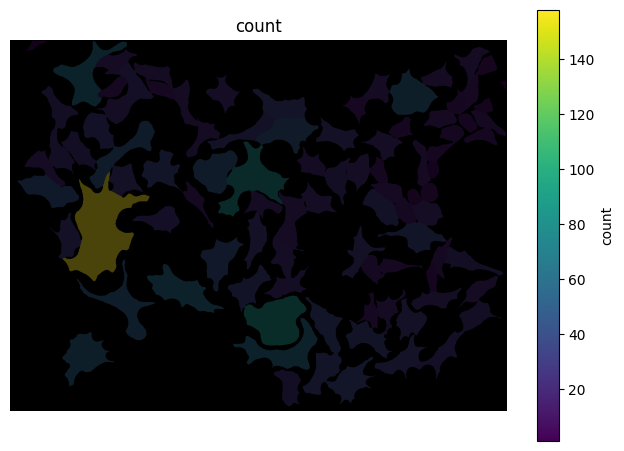
Generate random points#
Let’s generate our first set of random points. To make it more transparent, let’s focus on a single cell first.
cell_id = 63
spots = df_spots.loc[(df_spots['channel']==0) & (df_spots['label_cell']==cell_id)][['y', 'x']].to_numpy()
overlay(label_mask=mask, coordinates=spots, focus_object=cell_id)
(<Figure size 673.684x800 with 1 Axes>,
<Axes: title={'center': 'Segmentation overlay'}>)
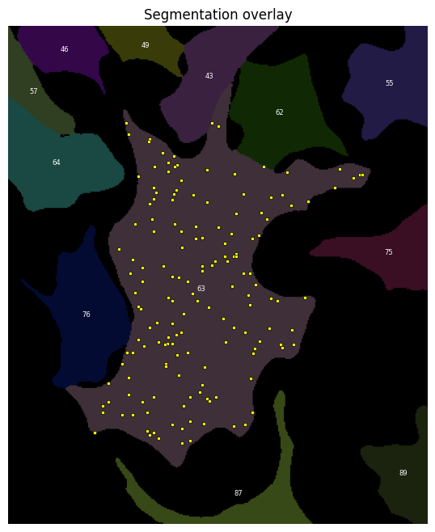
We can use a pre-written function to generate the random points. In short, what it does is:
It calculates the bounding box of the cell (the box that touches the edge of the cell at every side).
It draws random points inside that box and tests if they fall within the cell.
If not, the point is discarded.
If it is within the cell it is kept. This sequence is repeated until the cell contains the specified number of points.
This procedure is necessary since cells have irregular shapes.
def random_points_in_mask(mask, cell_label, n):
"""
Generate n random points uniformly distributed within a labeled cell region.
Points are placed continuously using rejection sampling:
candidate points are drawn uniformly from the bounding box of the cell and
accepted only if they fall within the cell mask. This correctly handles
irregular cell shapes and serves as a null model for Complete Spatial
Randomness (CSR).
Parameters
----------
mask : 2D numpy array
Label mask where each cell is identified by a unique integer ID
and background is 0.
cell_label : int
ID of the cell to sample within.
n : int
Number of random points to generate.
Returns
-------
points : (n, 2) numpy array
Random point coordinates in (row, col) / (y, x) order.
"""
ys, xs = np.where(mask == cell_label)
y_min, y_max = ys.min(), ys.max()
x_min, x_max = xs.min(), xs.max()
points = []
while len(points) < n:
y = np.random.uniform(y_min, y_max)
x = np.random.uniform(x_min, x_max)
if mask[int(round(y)), int(round(x))] == cell_label:
points.append([y, x])
return np.array(points)
Look up how many points are in our cell of interest.
n_points = df_cell.loc[df_cell['label']==cell_id]['count'].values[0]
print(n_points)
158
Create the same number of random points inside that cell.
rnd_points = random_points_in_mask(mask, cell_label=cell_id, n=n_points)
rnd_points.shape
(158, 2)
overlay(label_mask=mask, coordinates=[spots, rnd_points], focus_object=cell_id)
(<Figure size 673.684x800 with 1 Axes>,
<Axes: title={'center': 'Segmentation overlay'}>)
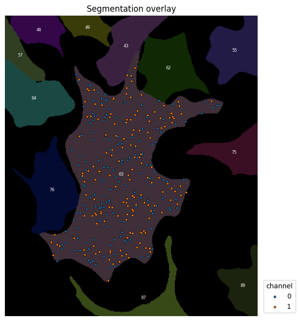
Identify nearest neighbours and measure the distance to them.#
Now that we have two sets of points, our measured spots and the random control, we can find the nearest neighbour of every point and calculate the distance. For that we we will use a KD tree, a spatial partitioning algorithm that identies neighbours very effectively.
The syntax for the KD tree function is a bit strange at first.
KDTree(points_A) builds the KD tree data structure. The distance to the nearest neighbours can be computed using .query(points_B, k=k). This measures the distance from every point in points_B to the k nearest neighbours in points_A. If the two point sets are the same (like in our case), the first distance will be 0, since it is the distance from each point to itself.
dist_spots,_ = KDTree(spots).query(spots, k=2) # the query returns an array of distances and an array of indices. We don't need the indicis so we assign it to the variable `_`.
print(dist_spots)
[[ 0. 10. ]
[ 0. 15.5241747 ]
[ 0. 12.52996409]
[ 0. 8.54400375]
[ 0. 8.48528137]
[ 0. 9.43398113]
[ 0. 6.40312424]
[ 0. 10. ]
[ 0. 9.43398113]
[ 0. 3.60555128]
[ 0. 4.47213595]
[ 0. 2. ]
[ 0. 2.23606798]
[ 0. 10.81665383]
[ 0. 4.12310563]
[ 0. 8.94427191]
[ 0. 5.38516481]
[ 0. 10.63014581]
[ 0. 8.24621125]
[ 0. 7.07106781]
[ 0. 6.40312424]
[ 0. 3.60555128]
[ 0. 2. ]
[ 0. 5.83095189]
[ 0. 2.23606798]
[ 0. 2.82842712]
[ 0. 19.6468827 ]
[ 0. 7.61577311]
[ 0. 8.24621125]
[ 0. 8.60232527]
[ 0. 4. ]
[ 0. 2. ]
[ 0. 5.09901951]
[ 0. 6.32455532]
[ 0. 10.29563014]
[ 0. 8.48528137]
[ 0. 8.60232527]
[ 0. 9.21954446]
[ 0. 9.21954446]
[ 0. 7.21110255]
[ 0. 10. ]
[ 0. 2. ]
[ 0. 5.83095189]
[ 0. 5.09901951]
[ 0. 5.83095189]
[ 0. 2.23606798]
[ 0. 9.05538514]
[ 0. 7.21110255]
[ 0. 16.4924225 ]
[ 0. 11.18033989]
[ 0. 12.04159458]
[ 0. 2.23606798]
[ 0. 4.47213595]
[ 0. 4.24264069]
[ 0. 12.52996409]
[ 0. 5. ]
[ 0. 17.4642492 ]
[ 0. 2.23606798]
[ 0. 5. ]
[ 0. 6.40312424]
[ 0. 6.32455532]
[ 0. 9.8488578 ]
[ 0. 15. ]
[ 0. 4.47213595]
[ 0. 4.12310563]
[ 0. 13.45362405]
[ 0. 5.09901951]
[ 0. 5.38516481]
[ 0. 12.20655562]
[ 0. 7.81024968]
[ 0. 13.41640786]
[ 0. 2.82842712]
[ 0. 8.06225775]
[ 0. 5.83095189]
[ 0. 1. ]
[ 0. 3.60555128]
[ 0. 15. ]
[ 0. 5.09901951]
[ 0. 5.09901951]
[ 0. 4.47213595]
[ 0. 7.21110255]
[ 0. 2. ]
[ 0. 9.8488578 ]
[ 0. 5. ]
[ 0. 3.60555128]
[ 0. 5.83095189]
[ 0. 18.43908891]
[ 0. 7.07106781]
[ 0. 2.82842712]
[ 0. 13.03840481]
[ 0. 8.06225775]
[ 0. 7.21110255]
[ 0. 2.23606798]
[ 0. 3.60555128]
[ 0. 4. ]
[ 0. 2.23606798]
[ 0. 9.8488578 ]
[ 0. 13.03840481]
[ 0. 10.04987562]
[ 0. 9.21954446]
[ 0. 9.05538514]
[ 0. 11.18033989]
[ 0. 8. ]
[ 0. 5.83095189]
[ 0. 5. ]
[ 0. 11.40175425]
[ 0. 11.18033989]
[ 0. 5. ]
[ 0. 17.08800749]
[ 0. 12.80624847]
[ 0. 2.23606798]
[ 0. 9.21954446]
[ 0. 10.63014581]
[ 0. 8.94427191]
[ 0. 5.09901951]
[ 0. 14.31782106]
[ 0. 9.43398113]
[ 0. 6.40312424]
[ 0. 11.66190379]
[ 0. 14.2126704 ]
[ 0. 6.32455532]
[ 0. 4. ]
[ 0. 1. ]
[ 0. 9.21954446]
[ 0. 2. ]
[ 0. 7.21110255]
[ 0. 3.60555128]
[ 0. 7.81024968]
[ 0. 8. ]
[ 0. 4.47213595]
[ 0. 9.8488578 ]
[ 0. 6.40312424]
[ 0. 17.08800749]
[ 0. 4. ]
[ 0. 5.38516481]
[ 0. 10. ]
[ 0. 4.47213595]
[ 0. 14.14213562]
[ 0. 4.24264069]
[ 0. 14.56021978]
[ 0. 2. ]
[ 0. 9.48683298]
[ 0. 12.52996409]
[ 0. 10.81665383]
[ 0. 4. ]
[ 0. 22.20360331]
[ 0. 6.32455532]
[ 0. 10.04987562]
[ 0. 10.63014581]
[ 0. 20.09975124]
[ 0. 12.08304597]
[ 0. 8.94427191]
[ 0. 3.60555128]
[ 0. 5.38516481]
[ 0. 12.04159458]
[ 0. 2.82842712]
[ 0. 5.83095189]
[ 0. 5. ]]
We do the same for the random spots.
dist_rnd,_ = KDTree(rnd_points).query(rnd_points, k=2) # the query returns an array of distances and an array of indices. We don't need the indicis so we assign it to the variable `_`.
print(dist_rnd)
[[ 0. 0.86635269]
[ 0. 3.39558703]
[ 0. 5.55177675]
[ 0. 10.76243607]
[ 0. 5.78676835]
[ 0. 3.33634541]
[ 0. 9.62433162]
[ 0. 0.78454626]
[ 0. 4.50554266]
[ 0. 7.07134261]
[ 0. 4.79044049]
[ 0. 23.32970445]
[ 0. 11.01639802]
[ 0. 5.55177675]
[ 0. 4.79044049]
[ 0. 7.0002352 ]
[ 0. 8.42477962]
[ 0. 7.76603762]
[ 0. 0.69197207]
[ 0. 7.34623999]
[ 0. 1.00145726]
[ 0. 6.84835791]
[ 0. 8.70774231]
[ 0. 15.04173301]
[ 0. 11.85770826]
[ 0. 7.84141139]
[ 0. 6.81679769]
[ 0. 8.51186192]
[ 0. 3.02753953]
[ 0. 7.8276484 ]
[ 0. 1.89090447]
[ 0. 8.12872914]
[ 0. 7.96971618]
[ 0. 8.37360062]
[ 0. 1.51537881]
[ 0. 1.89090447]
[ 0. 7.74157281]
[ 0. 14.18679919]
[ 0. 3.30814581]
[ 0. 2.86068255]
[ 0. 4.16362391]
[ 0. 4.27568125]
[ 0. 5.17711063]
[ 0. 6.1288069 ]
[ 0. 2.31072635]
[ 0. 5.13273524]
[ 0. 6.89735809]
[ 0. 11.16728395]
[ 0. 10.9477088 ]
[ 0. 2.4267943 ]
[ 0. 7.8276484 ]
[ 0. 6.41233579]
[ 0. 5.68628093]
[ 0. 3.99907604]
[ 0. 6.08044692]
[ 0. 5.71521771]
[ 0. 3.30814581]
[ 0. 17.37560335]
[ 0. 1.56132405]
[ 0. 8.45044378]
[ 0. 3.68352226]
[ 0. 8.03517103]
[ 0. 6.84835791]
[ 0. 1.56132405]
[ 0. 8.69140128]
[ 0. 14.53173291]
[ 0. 1.51537881]
[ 0. 10.57830912]
[ 0. 3.79036103]
[ 0. 3.33634541]
[ 0. 1.6826627 ]
[ 0. 43.35005215]
[ 0. 0.78454626]
[ 0. 8.42477962]
[ 0. 5.68628093]
[ 0. 12.40858197]
[ 0. 7.0002352 ]
[ 0. 6.38747015]
[ 0. 7.16683527]
[ 0. 12.41748522]
[ 0. 4.85269866]
[ 0. 10.9477088 ]
[ 0. 6.08044692]
[ 0. 3.79036103]
[ 0. 6.0757519 ]
[ 0. 2.86068255]
[ 0. 0.86635269]
[ 0. 10.37950991]
[ 0. 0.69197207]
[ 0. 9.91813444]
[ 0. 11.39719963]
[ 0. 8.00627931]
[ 0. 3.39558703]
[ 0. 1.6826627 ]
[ 0. 15.98589183]
[ 0. 4.31151494]
[ 0. 5.71521771]
[ 0. 6.5788538 ]
[ 0. 3.02753953]
[ 0. 3.97834342]
[ 0. 10.93810611]
[ 0. 6.0757519 ]
[ 0. 20.55157896]
[ 0. 1.00145726]
[ 0. 2.3842834 ]
[ 0. 7.57177302]
[ 0. 9.40490881]
[ 0. 6.05449884]
[ 0. 4.99730567]
[ 0. 2.4267943 ]
[ 0. 6.15760778]
[ 0. 14.96661575]
[ 0. 2.31072635]
[ 0. 7.16683527]
[ 0. 6.5788538 ]
[ 0. 8.03517103]
[ 0. 14.1051675 ]
[ 0. 7.91471249]
[ 0. 11.34662742]
[ 0. 9.87983197]
[ 0. 10.31461448]
[ 0. 7.59012475]
[ 0. 6.38747015]
[ 0. 5.13273524]
[ 0. 9.81518357]
[ 0. 12.32976345]
[ 0. 3.68352226]
[ 0. 12.48164359]
[ 0. 8.70774231]
[ 0. 6.15760778]
[ 0. 10.37950991]
[ 0. 6.85292046]
[ 0. 6.12384028]
[ 0. 6.89735809]
[ 0. 8.49241689]
[ 0. 7.34623999]
[ 0. 7.91471249]
[ 0. 4.91792143]
[ 0. 8.55259769]
[ 0. 12.09354023]
[ 0. 10.17794306]
[ 0. 13.3796944 ]
[ 0. 8.86262396]
[ 0. 4.27568125]
[ 0. 11.53974272]
[ 0. 2.3842834 ]
[ 0. 11.91473459]
[ 0. 4.50554266]
[ 0. 12.32976345]
[ 0. 13.2868659 ]
[ 0. 6.83443126]
[ 0. 4.16362391]
[ 0. 4.31151494]
[ 0. 8.00627931]
[ 0. 3.97834342]
[ 0. 5.7557607 ]
[ 0. 14.32579713]
[ 0. 6.1288069 ]]
Now, let’s calculate the mean nearest neighbour distances for both spot patterns and compare them.
spot_dist_avg = dist_spots[:,1].mean()
rnd_dist_avg = dist_rnd[:,1].mean()
print('Mean NN distance spots:', spot_dist_avg)
print('Mean NN distance random:', rnd_dist_avg)
print('Clark-Evans index (ratio):', spot_dist_avg/rnd_dist_avg)
Mean NN distance spots: 7.789777879704962
Mean NN distance random: 7.2747540876663015
Clark-Evans index (ratio): 1.0707960414650768
Repeat with multiple random patterns#
Is this a reliable comparison? No. The random pattern could be clustered by chance. To account for that and to estimate a p-value for the observed Clark-Evans index we repeat this procedure with additional random patterns.
n_repeats = 10
list_rnd_dist = [] # this list holds the average NN distances of the random points for each run
list_ce_index = [] # this list holds the Clark-Evans indices for each run
for i in range(n_repeats):
rnd_points = random_points_in_mask(mask, cell_label=cell_id, n=n_points)
dist_rnd,_ = KDTree(rnd_points).query(rnd_points, k=2)
rnd_dist_avg = dist_rnd[:,1].mean()
list_rnd_dist.append(rnd_dist_avg)
list_ce_index.append(spot_dist_avg/rnd_dist_avg)
print('Mean NN distance spots:', spot_dist_avg)
print('Mean NN distance spots ({} runs):'.format(n_repeats), np.array(list_rnd_dist).mean())
print('Mean Clark-Evans index ({} runs):'.format(n_repeats), np.array(list_ce_index).mean())
Mean NN distance spots: 7.789777879704962
Mean NN distance spots (10 runs): 7.49079652163105
Mean Clark-Evans index (10 runs): 1.0418780255376885
Can we trust this metric now? A little more, but it would be great to have a p-value. We can calculate the p-value by asking ‘In what fraction of the runs was the observed NN distance smaller than random?’.
runs_rnd_smaller = np.array(list_rnd_dist) <= spot_dist_avg
print(runs_rnd_smaller)
[ True True True True False False False True True True]
The fraction of Trues in this list is our p-value.
Clustered spots → NND_observed is small → most simulations produce a larger NND → few simulations have NND_sim ≤ NND_obs → p close to 0
Random spots → NND_observed is typical → roughly half the simulations fall below it → p ≈ 0.5
pval = runs_rnd_smaller.mean()
print('p-value for CE index:', pval)
p-value for CE index: 0.7
Repeat measurements for all cells#
So far, we have focussed on one single cell. Of course, we need to analyse all cells.
✍️ Exercise: Summarise the per-cell clustering analysis as a function#
To make processing individual cells simpler, we can summarise our above analysis in a function called NNDist.
The function should have the following features:
Parameters:
spots : (n, 2) numpy array Spot coordinates in (row, col) / (y, x) order.
mask : 2D numpy array Label mask where each cell is identified by a unique integer ID.
cell_id : int ID of the cell in mask that spots belong to.
n_repeats : int Number of CSR simulations to run.
Returns
spot_dist_avg : float Mean nearest-neighbor distance of the observed spots.
rnd_dist_avg : float Mean of the per-simulation mean nearest-neighbor distances under CSR.
clark_evans : float Clark-Evans index: spot_dist_avg / rnd_dist_avg.
p_value : float Fraction of CSR simulations with mean NND <= spot_dist_avg.
def NNDist(spots, mask, cell_id, n_repeats):
"""
Test whether spots in a cell are randomly distributed using nearest-neighbor
distances and a Monte Carlo simulation of Complete Spatial Randomness (CSR).
For each simulation run, n_repeats random point patterns are generated inside
the cell mask and their mean nearest-neighbor distance is computed. The
Clark-Evans index (observed / random NND) and a Monte Carlo p-value are
derived from this null distribution.
Parameters
----------
spots : (n, 2) numpy array
Spot coordinates in (row, col) / (y, x) order.
mask : 2D numpy array
Label mask where each cell is identified by a unique integer ID.
cell_id : int
ID of the cell in mask that spots belong to.
n_repeats : int
Number of CSR simulations to run.
Returns
-------
spot_dist_avg : float
Mean nearest-neighbor distance of the observed spots.
rnd_dist_avg : float
Mean of the per-simulation mean nearest-neighbor distances under CSR.
clark_evans : float
Clark-Evans index: spot_dist_avg / rnd_dist_avg.
< 1 indicates clustering, > 1 indicates dispersion.
p_value : float
Fraction of CSR simulations with mean NND <= spot_dist_avg.
Small values (< 0.05) indicate significant clustering.
"""
n_points = spots.shape[0]
dist_spots, _ = KDTree(spots).query(spots, k=2)
spot_dist_avg = dist_spots[:, 1].mean() # k=2: column 0 is self, column 1 is nearest neighbor
list_rnd_dist = []
list_ce_index = []
for i in range(n_repeats):
rnd_points = random_points_in_mask(mask, cell_label=cell_id, n=n_points)
dist_rnd, _ = KDTree(rnd_points).query(rnd_points, k=2)
rnd_dist_avg = dist_rnd[:, 1].mean()
list_rnd_dist.append(rnd_dist_avg)
list_ce_index.append(spot_dist_avg / rnd_dist_avg)
pval = (np.array(list_rnd_dist) <= spot_dist_avg).mean()
return spot_dist_avg, np.array(list_rnd_dist).mean(), np.array(list_ce_index).mean(), pval
NNDist(spots, mask, cell_id, 100)
(np.float64(7.789777879704962),
np.float64(7.5170548544982125),
np.float64(1.038400209265992),
np.float64(0.78))
channel = 0
n_repeats = 10
results = []
for _, row in df_cell.iterrows():
# get the spots for channel 0 and the current cell
spots_in_cell = df_spots[(df_spots['label_cell'] == row['label']) &
(df_spots['channel']==channel)][['y', 'x']].values
# calculate the NN distance, Clark-Evans index and p-value for that cell
results.append(NNDist(spots_in_cell, mask, row['label'], n_repeats=n_repeats))
df_cell[['nnd_observed', 'nnd_random', 'clark_evans', 'p_value']] = results
df_cell
/var/folders/nj/7mmlcz5x01z_gtm4ncvyj1cc0000gq/T/ipykernel_70628/2932270703.py:47: RuntimeWarning: invalid value encountered in scalar divide
list_ce_index.append(spot_dist_avg / rnd_dist_avg)
| area | label | count | nnd_observed | nnd_random | clark_evans | p_value | |
|---|---|---|---|---|---|---|---|
| 0 | 813.0 | 6 | 4 | 2.621320 | 8.723273 | 0.346478 | 0.0 |
| 1 | 12236.0 | 7 | 61 | 6.224340 | 7.966764 | 0.783937 | 0.0 |
| 2 | 3897.0 | 9 | 19 | 6.423956 | 8.264161 | 0.786613 | 0.0 |
| 3 | 4029.0 | 10 | 20 | 8.929209 | 7.916795 | 1.135395 | 1.0 |
| 4 | 2124.0 | 11 | 10 | 9.007935 | 8.183254 | 1.140789 | 0.6 |
| ... | ... | ... | ... | ... | ... | ... | ... |
| 89 | 10682.0 | 104 | 53 | 7.853425 | 7.830480 | 1.011293 | 0.7 |
| 90 | 6146.0 | 106 | 30 | 8.736020 | 8.472386 | 1.043741 | 0.6 |
| 91 | 6745.0 | 107 | 33 | 7.394869 | 8.472442 | 0.876339 | 0.0 |
| 92 | 7501.0 | 108 | 37 | 8.195712 | 8.541080 | 0.970702 | 0.3 |
| 93 | 4718.0 | 110 | 23 | 6.147608 | 8.331032 | 0.744933 | 0.0 |
94 rows × 7 columns
df_cell.loc[df_cell['label']==cell_id]
| area | label | count | nnd_observed | nnd_random | clark_evans | p_value | |
|---|---|---|---|---|---|---|---|
| 49 | 31664.0 | 63 | 158 | 7.789778 | 7.332887 | 1.064259 | 0.9 |
sns.histplot(
df_cell,
x='clark_evans',
)
plt.axvline(df_cell['clark_evans'].mean(), c='red', lw=10)
<matplotlib.lines.Line2D at 0x1196f3040>
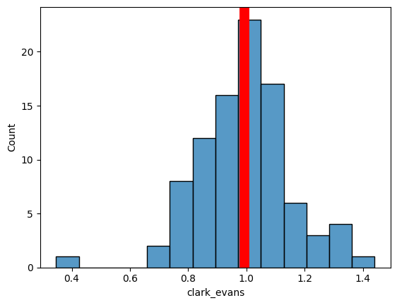
overlay(image=image[2,:,:], label_mask=mask, df=df_cell, id_col='label', measurement_col='clark_evans')
/var/folders/nj/7mmlcz5x01z_gtm4ncvyj1cc0000gq/T/ipykernel_70628/3150013430.py:215: DeprecationWarning: is_categorical_dtype is deprecated and will be removed in a future version. Use isinstance(dtype, pd.CategoricalDtype) instead
elif pd.api.types.is_categorical_dtype(df[measurement_col]) or pd.api.types.is_object_dtype(df[measurement_col]):
/var/folders/nj/7mmlcz5x01z_gtm4ncvyj1cc0000gq/T/ipykernel_70628/3150013430.py:246: DeprecationWarning: is_categorical_dtype is deprecated and will be removed in a future version. Use isinstance(dtype, pd.CategoricalDtype) instead
elif pd.api.types.is_categorical_dtype(df[measurement_col]) or pd.api.types.is_object_dtype(df[measurement_col]):
(<Figure size 800x800 with 2 Axes>, <Axes: title={'center': 'clark_evans'}>)
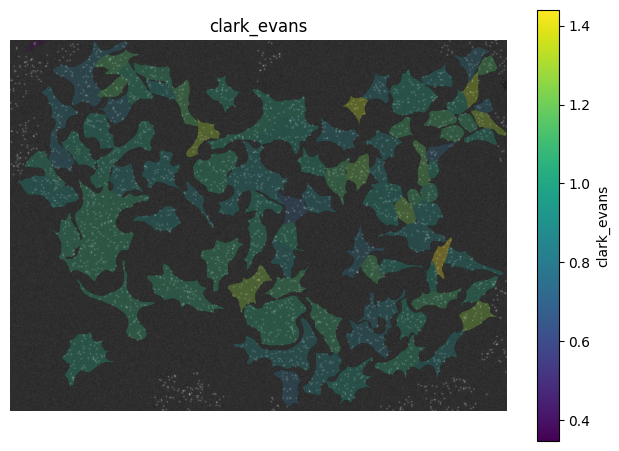
Perform the same calculation on the other channels#
Let’s use the tools we developed above to see if the spots in the other channels.
Channel 1
channel = 1
n_repeats = 10
results = []
for _, row in df_cell.iterrows():
# get the spots for channel 0 and the current cell
spots_in_cell = df_spots[(df_spots['label_cell'] == row['label']) &
(df_spots['channel']==channel)][['y', 'x']].values
# calculate the NN distance, Clark-Evans index and p-value for that cell
results.append(NNDist(spots_in_cell, mask, row['label'], n_repeats=n_repeats))
df_cell[['nnd_observed', 'nnd_random', 'clark_evans', 'p_value']] = results
df_cell
| area | label | count | nnd_observed | nnd_random | clark_evans | p_value | |
|---|---|---|---|---|---|---|---|
| 0 | 813.0 | 6 | 4 | 1.624836 | 2.092581 | 0.783669 | 0.1 |
| 1 | 12236.0 | 7 | 61 | 4.407303 | 5.734767 | 0.769693 | 0.0 |
| 2 | 3897.0 | 9 | 19 | 3.524946 | 4.220414 | 0.836395 | 0.0 |
| 3 | 4029.0 | 10 | 20 | 2.900196 | 4.151315 | 0.700929 | 0.0 |
| 4 | 2124.0 | 11 | 10 | 2.903812 | 3.221471 | 0.903688 | 0.0 |
| ... | ... | ... | ... | ... | ... | ... | ... |
| 89 | 10682.0 | 104 | 53 | 4.567848 | 5.386075 | 0.848731 | 0.0 |
| 90 | 6146.0 | 106 | 30 | 4.395955 | 4.729827 | 0.938710 | 0.3 |
| 91 | 6745.0 | 107 | 33 | 4.144519 | 4.873712 | 0.851252 | 0.0 |
| 92 | 7501.0 | 108 | 37 | 4.073854 | 5.119748 | 0.800176 | 0.0 |
| 93 | 4718.0 | 110 | 23 | 3.328396 | 4.514326 | 0.741015 | 0.0 |
94 rows × 7 columns
sns.histplot(
df_cell,
x='clark_evans',
)
plt.axvline(df_cell['clark_evans'].mean(), c='red', lw=10)
<matplotlib.lines.Line2D at 0x1196f3eb0>
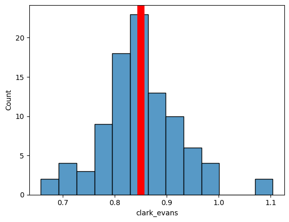
overlay(image=image[3,:,:], label_mask=mask, df=df_cell, id_col='label', measurement_col='clark_evans')
/var/folders/nj/7mmlcz5x01z_gtm4ncvyj1cc0000gq/T/ipykernel_70628/3150013430.py:215: DeprecationWarning: is_categorical_dtype is deprecated and will be removed in a future version. Use isinstance(dtype, pd.CategoricalDtype) instead
elif pd.api.types.is_categorical_dtype(df[measurement_col]) or pd.api.types.is_object_dtype(df[measurement_col]):
/var/folders/nj/7mmlcz5x01z_gtm4ncvyj1cc0000gq/T/ipykernel_70628/3150013430.py:246: DeprecationWarning: is_categorical_dtype is deprecated and will be removed in a future version. Use isinstance(dtype, pd.CategoricalDtype) instead
elif pd.api.types.is_categorical_dtype(df[measurement_col]) or pd.api.types.is_object_dtype(df[measurement_col]):
(<Figure size 800x800 with 2 Axes>, <Axes: title={'center': 'clark_evans'}>)
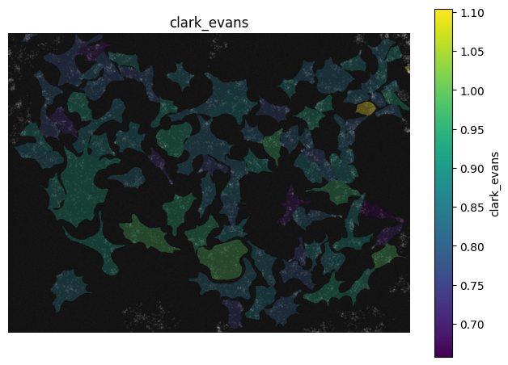
Channel 2
channel = 2
n_repeats = 10
results = []
for _, row in df_cell.iterrows():
# get the spots for channel 0 and the current cell
spots_in_cell = df_spots[(df_spots['label_cell'] == row['label']) &
(df_spots['channel']==channel)][['y', 'x']].values
# calculate the NN distance, Clark-Evans index and p-value for that cell
results.append(NNDist(spots_in_cell, mask, row['label'], n_repeats=n_repeats))
df_cell[['nnd_observed', 'nnd_random', 'clark_evans', 'p_value']] = results
df_cell
| area | label | count | nnd_observed | nnd_random | clark_evans | p_value | |
|---|---|---|---|---|---|---|---|
| 0 | 813.0 | 6 | 4 | 6.386375 | 5.841208 | 1.183311 | 0.5 |
| 1 | 12236.0 | 7 | 61 | 6.311969 | 6.802401 | 0.931204 | 0.0 |
| 2 | 3897.0 | 9 | 19 | 6.835503 | 6.882408 | 1.000944 | 0.3 |
| 3 | 4029.0 | 10 | 20 | 6.454970 | 6.530639 | 1.002395 | 0.4 |
| 4 | 2124.0 | 11 | 10 | 6.214888 | 6.674236 | 0.941602 | 0.2 |
| ... | ... | ... | ... | ... | ... | ... | ... |
| 89 | 10682.0 | 104 | 53 | 5.318296 | 7.620668 | 0.699892 | 0.0 |
| 90 | 6146.0 | 106 | 30 | 5.234533 | 6.652371 | 0.792979 | 0.0 |
| 91 | 6745.0 | 107 | 33 | 6.339555 | 6.902593 | 0.925239 | 0.2 |
| 92 | 7501.0 | 108 | 37 | 7.490188 | 7.352563 | 1.020644 | 0.7 |
| 93 | 4718.0 | 110 | 23 | 5.064676 | 6.928193 | 0.733269 | 0.0 |
94 rows × 7 columns
sns.histplot(
df_cell,
x='clark_evans',
)
plt.axvline(df_cell['clark_evans'].mean(), c='red', lw=10)
<matplotlib.lines.Line2D at 0x119a016c0>
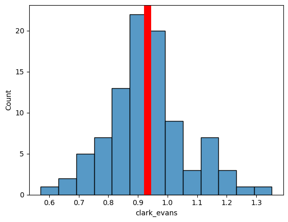
overlay(image=image[4,:,:], label_mask=mask, df=df_cell, id_col='label', measurement_col='clark_evans')
/var/folders/nj/7mmlcz5x01z_gtm4ncvyj1cc0000gq/T/ipykernel_70628/3150013430.py:215: DeprecationWarning: is_categorical_dtype is deprecated and will be removed in a future version. Use isinstance(dtype, pd.CategoricalDtype) instead
elif pd.api.types.is_categorical_dtype(df[measurement_col]) or pd.api.types.is_object_dtype(df[measurement_col]):
/var/folders/nj/7mmlcz5x01z_gtm4ncvyj1cc0000gq/T/ipykernel_70628/3150013430.py:246: DeprecationWarning: is_categorical_dtype is deprecated and will be removed in a future version. Use isinstance(dtype, pd.CategoricalDtype) instead
elif pd.api.types.is_categorical_dtype(df[measurement_col]) or pd.api.types.is_object_dtype(df[measurement_col]):
(<Figure size 800x800 with 2 Axes>, <Axes: title={'center': 'clark_evans'}>)
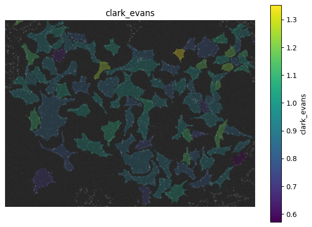
It seems like protein A is not clustered, protein B is clustering and protein C is a little ambiguos.
Ripleys L function#
We know that protein B is clustered compared to random. However, we don’t know what scale these clusters is. A common method to investigate the length scales of spatial patterns is Ripley’s L function. The idea is to calculate the density of spots around each spot for different radii and compare that to a random point pattern. The density of a random pattern is independend of the radius, while clustered points will exhibit higher density at shorter radii than longer ones. This way we can infer the average cluster size and distance between clusters.
Here, we only demostrate the concept on the spot pattern of protein B in one cell.
from scipy.ndimage import binary_erosion
def RipleysL(spots, mask, cell_id, n_repeats, r_values=None):
"""
Compute Ripley's L function for spots in a cell against a CSR null model,
using a Monte Carlo envelope from simulated random point patterns.
Returns the centered L function L(r) - r, which is 0 under CSR.
Positive values indicate clustering at scale r, negative values indicate
dispersion. Border correction is applied via mask erosion: only points at
least r pixels from the cell boundary are used as source points.
Parameters
----------
spots : (n, 2) numpy array
Spot coordinates in (row, col) / (y, x) order.
mask : 2D numpy array
Label mask where each cell is identified by a unique integer ID.
cell_id : int
ID of the cell in mask that spots belong to.
n_repeats : int
Number of CSR simulations to run.
r_values : 1D array or None
Radii at which to evaluate L(r) - r. Defaults to 30 values from 0
to half the cell's effective radius.
Returns
-------
r_values : 1D array
Radii at which L(r) - r was evaluated.
L_observed : 1D array
L(r) - r for the observed spots.
L_sims : (n_repeats, len(r_values)) array
L(r) - r for each CSR simulation. Use .min(axis=0) / .max(axis=0)
for the envelope, .mean(axis=0) for the expected value under CSR.
"""
cell_mask = mask == cell_id
area = cell_mask.sum()
n_points = spots.shape[0]
if r_values is None:
r_max = np.sqrt(area / np.pi) * 0.5
r_values = np.linspace(0, r_max, 30)
# precompute eroded masks for each r — done once, not per simulation
eroded_masks = []
for r in r_values:
r_int = int(np.ceil(r))
size = 2 * r_int + 1
cy, cx = np.ogrid[-r_int:size - r_int, -r_int:size - r_int]
struct = cy**2 + cx**2 <= r**2
eroded_masks.append(binary_erosion(cell_mask, structure=struct))
def compute_L(coords):
tree = KDTree(coords)
K = []
for r, eroded in zip(r_values, eroded_masks):
valid = eroded[coords[:, 0].astype(int), coords[:, 1].astype(int)]
n_valid = valid.sum()
if n_valid == 0:
K.append(np.nan)
continue
count = sum(len(tree.query_ball_point(p, r)) - 1 for p in coords[valid])
K.append((area / (n_valid * n_points)) * count)
return np.sqrt(np.array(K) / np.pi) - r_values
L_observed = compute_L(spots)
L_sims = []
for _ in range(n_repeats):
rnd_points = random_points_in_mask(mask, cell_label=cell_id, n=n_points)
L_sims.append(compute_L(rnd_points))
return r_values, L_observed, np.array(L_sims)
cell_id = 63
spots = df_spots.loc[(df_spots['channel']==1) & (df_spots['label_cell']==cell_id)][['y', 'x']].to_numpy()
overlay(label_mask=mask, coordinates=spots, focus_object=cell_id)
(<Figure size 673.684x800 with 1 Axes>,
<Axes: title={'center': 'Segmentation overlay'}>)
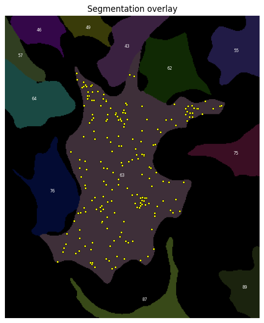
r_values, L_obs, L_sims = RipleysL(spots, mask, cell_id=63, n_repeats=200)
plt.plot(r_values, L_obs, color='black', label='observed')
plt.fill_between(r_values,
np.percentile(L_sims, 2.5, axis=0),
np.percentile(L_sims, 97.5, axis=0),
alpha=0.3, label='95% CSR envelope')
plt.axhline(0, color='grey', linestyle='--')
plt.xlabel('r (pixels)')
plt.ylabel('L(r) - r')
plt.legend()
<matplotlib.legend.Legend at 0x119b4f910>
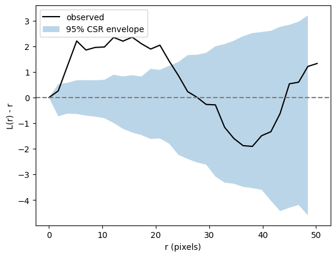
We observe clustering with scale 2-20 pixels, where the observed curve is above the 95% CSR envelope.
2. Do the spots co-localise?#
Answering this question is very similar to answering if spots are clustered and uses the same tools. Instead of finding nearest neighbours for each point within its own set, we find the nearest neighbours of points in set A in point set B.
Our workflow is:
Generate a randomly distributed set of points inside each cell’s cytoplasm.
For every spot in point set A identify the closest spot in point set B and measure the distance.
For every spot in point set A idnetify the closest point in the random point set and measure the distance.
Average the two distances across all spots in the cell.
Calculate the ratio of the average A-B distance vs. A-random distance. This Clark-Evans index is 1 if points of set B and the random set are both distributed independently of A. <1 if A co-localises with B. >1 if A and B avoid each other.
Calculate the p-value of the ratio using comparison to multiple random patterns.
Reverse the direction of comparison and measure the distance of every point in B to A; repeat the analysis.
The two directions are not interchangeable. If set B is much denser than A, every A point will happen to be near some B point even at random, making A→B appear co-localized by chance. Measuring B→A guards against this: if B is merely dense everywhere rather than specifically clustering around A, most B points will still be far from A and the ratio will stay near 1. True mutual co-localization produces small ratios in both directions.
overlay(label_mask=mask, coordinates=df_spots.loc[df_spots['channel'].isin([0,1])], focus_object=cell_id)
(<Figure size 673.684x800 with 1 Axes>,
<Axes: title={'center': 'Segmentation overlay'}>)

Generate random point distribution#
As before, we focus on one cell to illustrate the principles. First, we need to generate two random set of points, one each as a random distribution of the points of protien A and B (same number of points).
cell_id = 63
spots_A = df_spots.loc[(df_spots['channel']==0) & (df_spots['label_cell']==cell_id)][['y', 'x']].to_numpy()
spots_B = df_spots.loc[(df_spots['channel']==1) & (df_spots['label_cell']==cell_id)][['y', 'x']].to_numpy()
n_A, n_B = spots_A.shape[0], spots_B.shape[0]
rnd_A = random_points_in_mask(mask, cell_label=cell_id, n=n_A)
rnd_B = random_points_in_mask(mask, cell_label=cell_id, n=n_B)
overlay(label_mask=mask, coordinates=[spots_A, spots_B, rnd_A, rnd_B], focus_object=cell_id)
(<Figure size 673.684x800 with 1 Axes>,
<Axes: title={'center': 'Segmentation overlay'}>)

Calculate distances to neares neighbours.#
We calculate the nearest neighbour distances from
protein A spots to protein B spots
protein B spots to protein A spots
protein A spots to randomised B spots
protien B spots to randomised A spots
nn_AtoB = KDTree(spots_B).query(spots_A, k=1)[0].mean()
nn_BtoA = KDTree(spots_A).query(spots_B, k=1)[0].mean()
nn_ArndB = KDTree(rnd_B).query(spots_A, k=1)[0].mean()
nn_BrndA = KDTree(rnd_A).query(spots_B, k=1)[0].mean()
print('Mean NN dist. A->B:', nn_AtoB)
print('Mean NN dist. B->A:', nn_BtoA)
print('Mean NN dist. A->random(B):', nn_ArndB)
print('Mean NN dist. B->random(A):', nn_BrndA)
Mean NN dist. A->B: 1.9696171301040926
Mean NN dist. B->A: 3.3610265155268935
Mean NN dist. A->random(B): 6.508343152191545
Mean NN dist. B->random(A): 7.741334209284501
Now we can calculate our Clark-Evans indices.
ce_AB = nn_AtoB / nn_ArndB
ce_BA = nn_BtoA / nn_BrndA
print('Clark-Evans index A->B:', ce_AB)
print('Clark-Evans index B->A:', ce_BA)
Clark-Evans index A->B: 0.3026295762295303
Clark-Evans index B->A: 0.434166310956563
Repeat with multiple random patterns#
As before, we need to compare to multiple random patterns to
n_repeats = 100
sims_AtoB, sims_BtoA = [], []
for _ in range(n_repeats):
rnd_A = random_points_in_mask(mask, cell_label=cell_id, n=n_A)
rnd_B = random_points_in_mask(mask, cell_label=cell_id, n=n_B)
sims_AtoB.append(KDTree(rnd_B).query(spots_A, k=1)[0].mean())
sims_BtoA.append(KDTree(rnd_A).query(spots_B, k=1)[0].mean())
sims_AtoB = np.array(sims_AtoB)
sims_BtoA = np.array(sims_BtoA)
print('nn_AtoB', nn_AtoB)
print('nn_BtoA', nn_BtoA)
print('nn_random_AtoB', sims_AtoB.mean())
print('nn_random_BtoA', sims_BtoA.mean())
print('ce_AtoB', nn_AtoB / sims_AtoB.mean())
print('ce_BtoA', nn_BtoA / sims_BtoA.mean())
print('pval_AtoB', (sims_AtoB <= nn_AtoB).mean())
print('pval_BtoA', (sims_BtoA <= nn_BtoA).mean())
nn_AtoB 1.9696171301040926
nn_BtoA 3.3610265155268935
nn_random_AtoB 6.537335330741165
nn_random_BtoA 7.355972031404175
ce_AtoB 0.30128745589080697
ce_BtoA 0.4569112689904165
pval_AtoB 0.0
pval_BtoA 0.0
✍️ Exercise: Summarise the per-cell co-localisation analysis as a function#
To make processing individual cells simpler, we can summarise our above analysis in a function called CrossNN.
The function should have the following features:
Parameters spots_A, spots_B : (n, 2) numpy arrays Spot coordinates in (row, col) / (y, x) order. mask : 2D numpy array Label mask where each cell is identified by a unique integer ID. cell_id : int ID of the cell in mask that both spot sets belong to. n_repeats : int Number of CSR simulations to run.
Returns dict with keys: nn_AtoB, nn_BtoA : float Observed mean cross-NN distance in each direction. nn_random_AtoB, nn_random_BtoA : float Mean of simulated cross-NN distances under CSR. ce_AtoB, ce_BtoA : float Cross Clark-Evans index (observed / random). < 1 indicates co-localization, > 1 indicates avoidance. pval_AtoB, pval_BtoA : float Fraction of simulations with cross-NN <= observed. Small values indicate significant co-localization.
def CrossNN(spots_A, spots_B, mask, cell_id, n_repeats):
"""
Test whether two sets of spots are more co-localized than expected under
CSR using cross nearest-neighbor distances.
For each point in A, the nearest neighbor in B is found (and vice versa).
The observed mean cross-NN distances are compared to a null distribution
where both sets are independently randomized within the cell mask.
The two directions (A→B and B→A) can differ when the sets have different
sizes: a small set is always close to a large one even by chance.
Parameters
----------
spots_A, spots_B : (n, 2) numpy arrays
Spot coordinates in (row, col) / (y, x) order.
mask : 2D numpy array
Label mask where each cell is identified by a unique integer ID.
cell_id : int
ID of the cell in mask that both spot sets belong to.
n_repeats : int
Number of CSR simulations to run.
Returns
-------
dict with keys:
nn_AtoB, nn_BtoA : float
Observed mean cross-NN distance in each direction.
nn_random_AtoB, nn_random_BtoA : float
Mean of simulated cross-NN distances under CSR.
ce_AtoB, ce_BtoA : float
Cross Clark-Evans index (observed / random). < 1 indicates
co-localization, > 1 indicates avoidance.
pval_AtoB, pval_BtoA : float
Fraction of simulations with cross-NN <= observed.
Small values indicate significant co-localization.
"""
n_A, n_B = spots_A.shape[0], spots_B.shape[0]
# observed cross-NN distances
nn_AtoB = KDTree(spots_B).query(spots_A, k=1)[0].mean()
nn_BtoA = KDTree(spots_A).query(spots_B, k=1)[0].mean()
sims_AtoB, sims_BtoA = [], []
for _ in range(n_repeats):
rnd_A = random_points_in_mask(mask, cell_label=cell_id, n=n_A)
rnd_B = random_points_in_mask(mask, cell_label=cell_id, n=n_B)
sims_AtoB.append(KDTree(rnd_B).query(spots_A, k=1)[0].mean())
sims_BtoA.append(KDTree(rnd_A).query(spots_B, k=1)[0].mean())
sims_AtoB = np.array(sims_AtoB)
sims_BtoA = np.array(sims_BtoA)
return {
'nn_AtoB': nn_AtoB,
'nn_BtoA': nn_BtoA,
'nn_random_AtoB': sims_AtoB.mean(),
'nn_random_BtoA': sims_BtoA.mean(),
'ce_AtoB': nn_AtoB / sims_AtoB.mean(),
'ce_BtoA': nn_BtoA / sims_BtoA.mean(),
'pval_AtoB': (sims_AtoB <= nn_AtoB).mean(),
'pval_BtoA': (sims_BtoA <= nn_BtoA).mean(),
}
spots_A = df_spots.loc[(df_spots['channel']==0) & (df_spots['label_cell']==cell_id)][['y', 'x']].to_numpy()
spots_B = df_spots.loc[(df_spots['channel']==1) & (df_spots['label_cell']==cell_id)][['y', 'x']].to_numpy()
CrossNN(spots_A=spots_A, spots_B=spots_B, mask=mask, cell_id=cell_id, n_repeats=10)
{'nn_AtoB': np.float64(1.9696171301040926),
'nn_BtoA': np.float64(3.3610265155268935),
'nn_random_AtoB': np.float64(6.603303167119867),
'nn_random_BtoA': np.float64(7.246996725683177),
'ce_AtoB': np.float64(0.2982775559831174),
'ce_BtoA': np.float64(0.46378198345467697),
'pval_AtoB': np.float64(0.0),
'pval_BtoA': np.float64(0.0)}
Repeat measurements for all cells#
So far, we have focussed on one single cell. Of course, we need to analyse all cells.
n_repeats = 10
results = []
for cell_id in df_cell['label'].unique():
spots_A = df_spots.loc[(df_spots['channel']==0) & (df_spots['label_cell']==cell_id)][['y', 'x']].to_numpy()
spots_B = df_spots.loc[(df_spots['channel']==1) & (df_spots['label_cell']==cell_id)][['y', 'x']].to_numpy()
# calculate the NN distance, Clark-Evans index and p-value for that cell
results.append(CrossNN(spots_A=spots_A, spots_B=spots_B, mask=mask, cell_id=cell_id, n_repeats=n_repeats))
df_cell = pd.concat([df_cell, pd.DataFrame(results)], axis=1)
df_cell
| area | label | count | nnd_observed | nnd_random | clark_evans | p_value | nn_AtoB | nn_BtoA | nn_random_AtoB | nn_random_BtoA | ce_AtoB | ce_BtoA | pval_AtoB | pval_BtoA | |
|---|---|---|---|---|---|---|---|---|---|---|---|---|---|---|---|
| 0 | 813.0 | 6 | 4 | 6.386375 | 5.841208 | 1.183311 | 0.5 | 0.500000 | 7.040192 | 2.107554 | 8.423400 | 0.237242 | 0.835790 | 0.0 | 0.3 |
| 1 | 12236.0 | 7 | 61 | 6.311969 | 6.802401 | 0.931204 | 0.0 | 2.043728 | 5.711784 | 5.774096 | 7.714179 | 0.353948 | 0.740427 | 0.0 | 0.0 |
| 2 | 3897.0 | 9 | 19 | 6.835503 | 6.882408 | 1.000944 | 0.3 | 1.645157 | 5.123184 | 3.874341 | 7.456071 | 0.424629 | 0.687116 | 0.0 | 0.1 |
| 3 | 4029.0 | 10 | 20 | 6.454970 | 6.530639 | 1.002395 | 0.4 | 3.593114 | 5.122364 | 4.420370 | 7.349626 | 0.812854 | 0.696956 | 0.0 | 0.0 |
| 4 | 2124.0 | 11 | 10 | 6.214888 | 6.674236 | 0.941602 | 0.2 | 1.700877 | 8.957093 | 3.213349 | 8.099835 | 0.529316 | 1.105836 | 0.0 | 0.7 |
| ... | ... | ... | ... | ... | ... | ... | ... | ... | ... | ... | ... | ... | ... | ... | ... |
| 89 | 10682.0 | 104 | 53 | 5.318296 | 7.620668 | 0.699892 | 0.0 | 1.852648 | 4.067538 | 5.544458 | 7.544323 | 0.334144 | 0.539152 | 0.0 | 0.0 |
| 90 | 6146.0 | 106 | 30 | 5.234533 | 6.652371 | 0.792979 | 0.0 | 2.548677 | 5.406141 | 4.760794 | 8.318264 | 0.535347 | 0.649912 | 0.0 | 0.0 |
| 91 | 6745.0 | 107 | 33 | 6.339555 | 6.902593 | 0.925239 | 0.2 | 1.698497 | 4.073663 | 4.703580 | 7.472306 | 0.361107 | 0.545168 | 0.0 | 0.0 |
| 92 | 7501.0 | 108 | 37 | 7.490188 | 7.352563 | 1.020644 | 0.7 | 1.837516 | 4.194518 | 4.806957 | 7.910465 | 0.382262 | 0.530249 | 0.0 | 0.0 |
| 93 | 4718.0 | 110 | 23 | 5.064676 | 6.928193 | 0.733269 | 0.0 | 1.699123 | 6.769784 | 4.445838 | 7.900927 | 0.382183 | 0.856834 | 0.0 | 0.2 |
94 rows × 15 columns
sns.histplot(
df_cell,
x='nn_AtoB',
)
plt.axvline(df_cell['nn_AtoB'].mean(), c='red', lw=5, label='mean A->B')
plt.axvline(df_cell['nn_random_AtoB'].mean(), c='green', lw=5, label='mean A->random')
plt.legend()
<matplotlib.legend.Legend at 0x11bd726b0>

sns.histplot(
df_cell,
x='nn_BtoA',
)
plt.axvline(df_cell['nn_BtoA'].mean(), c='red', lw=5, label='mean B->A')
plt.axvline(df_cell['nn_random_BtoA'].mean(), c='green', lw=5, label='mean B->random')
plt.legend()
<matplotlib.legend.Legend at 0x119de4550>

sns.histplot(
df_cell,
x='ce_AtoB',
)
plt.axvline(df_cell['ce_AtoB'].mean(), c='red', lw=5)
<matplotlib.lines.Line2D at 0x119de4130>

sns.histplot(
df_cell,
x='ce_BtoA',
)
plt.axvline(df_cell['ce_BtoA'].mean(), c='red', lw=5)
<matplotlib.lines.Line2D at 0x11a1919f0>

Interpretation: Almost all of protein A associates with protein B but not vice versa.
3. Does Protein C localise to the cell membrane?#
Another common task is to ask whether a distribution of objects is close to a certain cellular region; in this case the cell membrane. At first glance this might seem distinct from what we have done so far, but it is just a variation of co-localisation analysis. The key is to transform the region into a set of points. This way we can do the exact same analysis as above.
✍️ Exercise: Perform the analysis#
Use the cross nearest neighbour analysis we developed above to find out if protein C localises preferentially to the cell membrane.
Hints:
The code snippet below illustrates how a boolean mask of a whole single cell can be turned into its boundary and subsequently into a list of boundary coordinates (points).
Think carefully about which populations to randomise and compare.
from skimage.segmentation import find_boundaries
cell_id = 63
spots_C = df_spots.loc[(df_spots['channel']==2) & (df_spots['label_cell']==cell_id)][['y', 'x']].to_numpy()
boundary = find_boundaries(mask == cell_id)
coords = np.argwhere(boundary)
overlay(label_mask=boundary, coordinates=[spots_C, coords], focus_object=True)
(<Figure size 674.314x800 with 1 Axes>,
<Axes: title={'center': 'Segmentation overlay'}>)
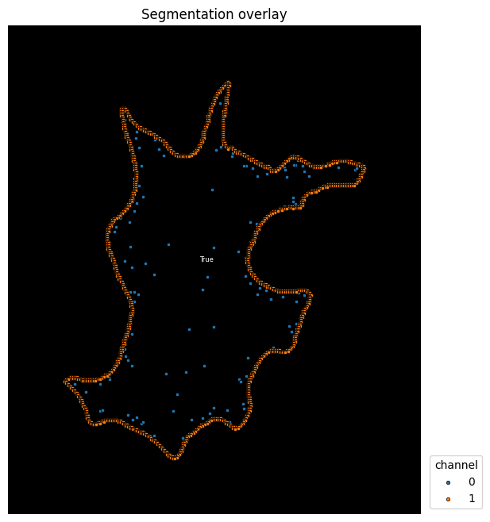
def NNdist_target(spots_from, spots_to, mask, cell_id, n_repeats):
"""
Calculate the nearest neighbour distance from `spots_from` to `spots_to`.
"""
n_from = spots_from.shape[0]
# observed NN distances
nn_obs = KDTree(spots_to).query(spots_from, k=1)[0].mean()
# randomised NN distances
sims = []
for _ in range(n_repeats):
rnd = random_points_in_mask(mask, cell_label=cell_id, n=n_from)
sims.append(KDTree(rnd_B).query(rnd, k=1)[0].mean())
sims = np.array(sims)
return {
'nn_observed': nn_obs,
'nn_random': sims.mean(),
'ce': nn_obs / sims.mean(),
'pval': (sims <= nn_obs).mean(),
}
n_repeats = 10
results = []
for cell_id in df_cell['label'].unique():
boundary = find_boundaries(mask == cell_id)
coords = np.argwhere(boundary)
spots_C = df_spots.loc[(df_spots['channel']==2) & (df_spots['label_cell']==cell_id)][['y', 'x']].to_numpy()
# calculate the NN distance, Clark-Evans index and p-value for that cell
results.append(NNdist_target(spots_from=spots_C, spots_to=coords, mask=mask, cell_id=cell_id, n_repeats=n_repeats))
df_boundary = pd.DataFrame(results)
df_boundary
| nn_observed | nn_random | ce | pval | |
|---|---|---|---|---|
| 0 | 3.730943 | 412.027304 | 0.009055 | 0.0 |
| 1 | 4.867899 | 289.938812 | 0.016789 | 0.0 |
| 2 | 5.118525 | 986.041290 | 0.005191 | 0.0 |
| 3 | 4.387293 | 325.795797 | 0.013466 | 0.0 |
| 4 | 3.287399 | 1020.099624 | 0.003223 | 0.0 |
| ... | ... | ... | ... | ... |
| 89 | 5.160171 | 222.376031 | 0.023205 | 0.0 |
| 90 | 4.033176 | 830.678799 | 0.004855 | 0.0 |
| 91 | 6.320505 | 653.078410 | 0.009678 | 0.0 |
| 92 | 5.492485 | 731.050070 | 0.007513 | 0.0 |
| 93 | 3.401093 | 598.896732 | 0.005679 | 0.0 |
94 rows × 4 columns
sns.histplot(
df_boundary,
x='nn_observed',
)
plt.axvline(df_boundary['nn_observed'].mean(), c='red', lw=5, label='mean A->B')
# plt.axvline(df_boundary['nn_random'].mean(), c='green', lw=5, label='mean A->random')
plt.legend()
<matplotlib.legend.Legend at 0x11cb3d8d0>
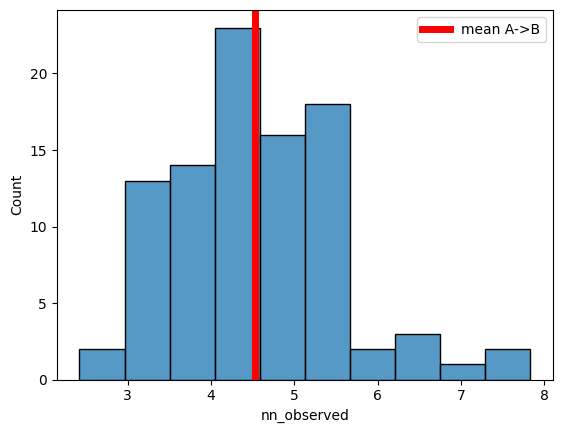
sns.histplot(
df_boundary,
x='nn_random',
)
# plt.axvline(df_boundary['nn_observed'].mean(), c='red', lw=5, label='mean A->B')
plt.axvline(df_boundary['nn_random'].mean(), c='green', lw=5, label='mean A->random')
plt.legend()
<matplotlib.legend.Legend at 0x11ca37b80>
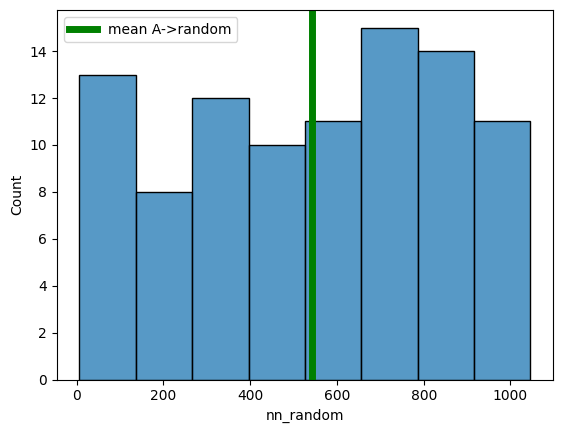
sns.histplot(
df_boundary,
x='ce',
)
plt.axvline(df_boundary['ce'].mean(), c='red', lw=5)
plt.xlim(0,0.2)
(0.0, 0.2)
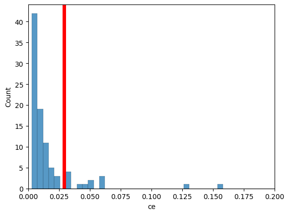
So, definitely, Protein C localises close to the cell membrane with an average distance of 4.5 pixels.